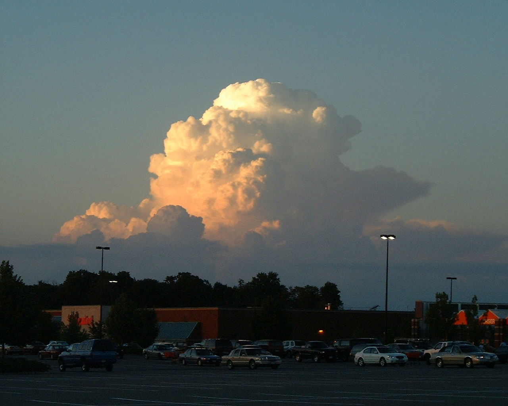

Lone Cloud
This is a cloud that I noticed shortly before sunset at the Latham
Farms Wal-Mart parking lot on 10 July, 2001. The image is 1280x1024
pixels (149K) scaled down by the html to 640x512. Click on it for the
full-sized image. There's also a
cropped 1024x768 version (87K) of just the cloud and
scaled down to 512x374 (24K).
